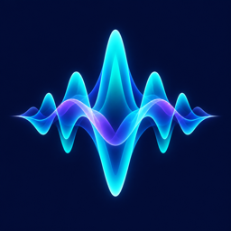

Morlet
Sound Spectrum & Wavelets for iPhone
Morlet shows the sound around you as a live, scrolling picture of frequency over time. It has two views: a Fourier spectrum and a wavelet scalogram. You can tap anywhere on the graph to read the frequency, note and level, see the loudest pitch like a tuner, and record sessions to export as audio and data. Morlet is free, with no ads, accounts or in-app purchases.
Getting started
Start listening
Tap the microphone button and allow microphone access when asked. The graph begins scrolling from the right, with low frequencies at the bottom and high frequencies at the top.
Choose a view
Spectrum is steady and easy to compare across the range. Wavelet gives low sounds precise pitch and high sounds precise timing.
Pick settings for what you are hearing
Open the sliders button and tap Which settings should I use? for one-tap setups for music, speech, drums, hum and birdsong, plus an explanation of every setting.
Questions
How do I read a specific point on the graph?
Tap or drag on the graph. A crosshair shows the frequency, nearest note, level and how long ago that moment was. Use the pause button on the graph to freeze the picture while you look. The microphone and any recording keep running.
The loudest-pitch readout shows the wrong note.
The readout shows the strongest frequency, which is sometimes a harmonic rather than the note being played, or low background rumble. Raise the Lowest frequency in settings to ignore rumble. For precise tuning, use a frequency detail of 4,096 or 8,192.
The graph is too dark or too bright.
Adjust Brightness and Contrast in the Display section of settings. They change only the picture, not the analysis or exports.
Where are my recordings?
Tap the list button at the top of the screen. You can share or delete each recording there. Recordings are stored only on your iPhone and are removed if you delete the app.
What do the exported files contain?
audio.wav: the recording as uncompressed audio.analysis.csv: one row per analysis frame, with a time column, spectrum columns in dBFS, and wavelet columns in dB.metadata.json: the settings used, so the data can be interpreted later.
Morlet says microphone access is disabled.
Open the Settings app, scroll to Morlet, and turn on Microphone.
Why do the very top rows look empty?
Many sounds have little energy at the highest frequencies, and some microphones and headsets cut off early. Lower the Highest frequency in settings to spend the rows on the range you care about.
Contact
Found a bug or have a suggestion? Open an issue on GitHub. It helps to include your iPhone model, iOS version and the settings you were using.